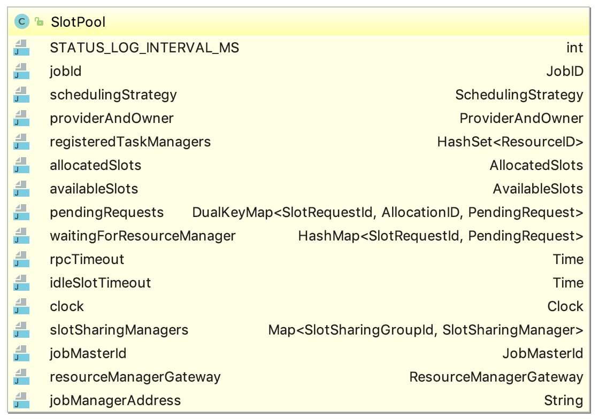
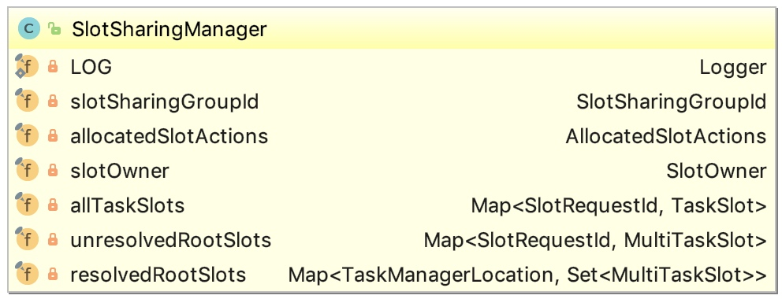
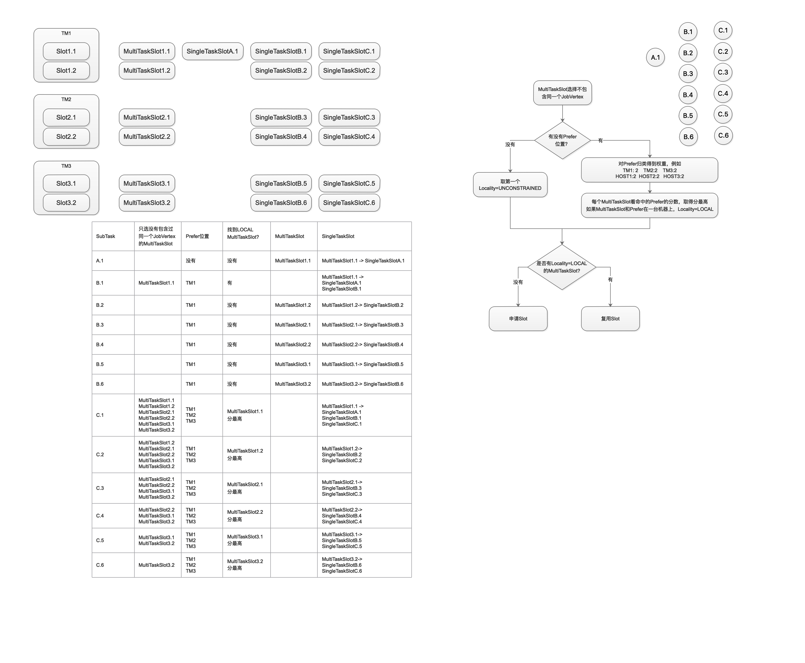

Flink源码阅读笔记–资源申请篇
入口SlotPool.allocateSlot

pendingRequests：用于在向RM申请Slot后没有确认前的临时注册
allocatedSlots：在收到JM发来的SlotOffer后确认正式成为Slot
availableSlots：和allocatedSlots差不多，是allocatedSlots在异常情况下的备份
创建SlotSharingManager
每个SlotSharingGroup创建SlotSharingManager（大多数仅一个SlotSharingGroup）

slotOwner指向SlotPool.ProviderAndOwner
allocatedSlotActions指向SlotPool
allTaskSlots(存储MultiTaskSlot和SingleTaskSlot)
unresolvedRootSlots：在申请Slot后并且在确认前的临时存储
resolvedRootSlots：在申请Slot并且在确认后，根据TM划分为形如TM1-(MultiTaskSlot,MultiTaskSlot), TM2-(MultiTaskSlot,MultiTaskSlot)
SlotPool.allocateMultiTaskSlot
SlotSharingManager.getResolvedRootSlot
尝试从resolvedRootSlots的若干个MultiTaskSlot中选一个重用。逻辑：先选所有MultiTaskSlot未曾挂载过同一个JobVertex实例的，列为集合S；
如果没有PreferredLocation，取S中第一个；
如果有PreferredLocation，对S中的每一个根据命中PreferredLocation的情况打分，取得分最高的。
SlotPool.requestNewAllocatedSlot & SlotSharingManager.createRootSlot
如果找不到可重用的：
- 创建PendingRequest(包含一个future，在complete时会触发多个操作；在RM-TM-JM-SP走一圈后complete)
- ResourceManager.requestSlot
- 创建MultiTaskSlot增加到allTaskSlots；
- 当Slot申请成功时，从unresolvedRootSlots移除，加入到resolvedRootSlots
MultiTaskSlot.allocateSingleTaskSlot
创建SingleTaskSlot加入到allTaskSlots
总之，整体思路是先查找未曾挂载过同一JobVertex下其他实例、本地的MultiTaskSlot。如果有则使用，如果没有就去申请一个。然后在MultiTaskSlot上挂上SingleTaskSlot
在没有启用CoLocationConstraint时
- 一个物理Slot对应的就是一个MultiTaskSlot
- MultiTaskSlot本身子节点只可能是SingleTaskSlot
- 每个Execution对应一个SingleTaskSlot，SingleTaskSlot的JobVertex信息从Execution中取。
- 同一个JobVertex不同SubTask不可能挂在同一个MultiTaskSlot中
